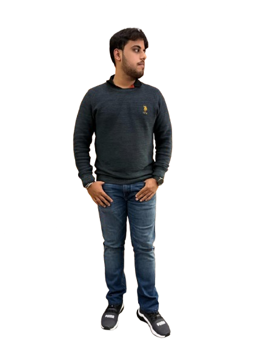

About Me
Hello! I’m Naman Kudesia, a passionate software engineer based in Lucknow. With a robust background in software engineering, specializing in Java and .NET development, cloud computing (Azure, AWS, GCP), and web development, I love creating scalable applications that deliver engaging user experiences.
Throughout my four years of engineering, I served as the class representative, which honed my leadership and organizational skills. I was also actively involved in the community as a Cloud Computing Facilitator at the Google Developer Student Club at Babu Banarasi Das Institute of Technology and Management, Lucknow. Additionally, I organized an International Mathematics Webinar at our college, which helped me gain a diverse set of skills and fostered a collaborative environment.
I have hands-on experience in designing and deploying scalable applications, and I bring proficiency in technologies such as Java, ASP.NET, SQL Server, and JavaScript frameworks. My proactive approach to learning has enabled me to master Java alongside my expertise in cloud services, enhancing my ability to deliver innovative solutions. I am also an active contributor to open-source projects, which allows me to collaborate with developers worldwide and continuously improve my skills.
I am passionate about leveraging technology to solve complex challenges and contribute effectively to dynamic software projects.
Hobbies
Staying Fit at the Gym
Enjoying Swimming
Playing Cricket
Collecting Coins & Currency

Playing Android Games
Creating Videos